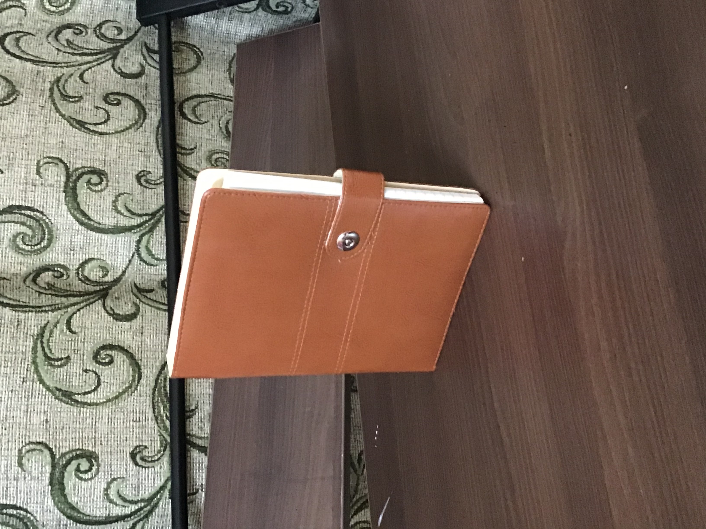
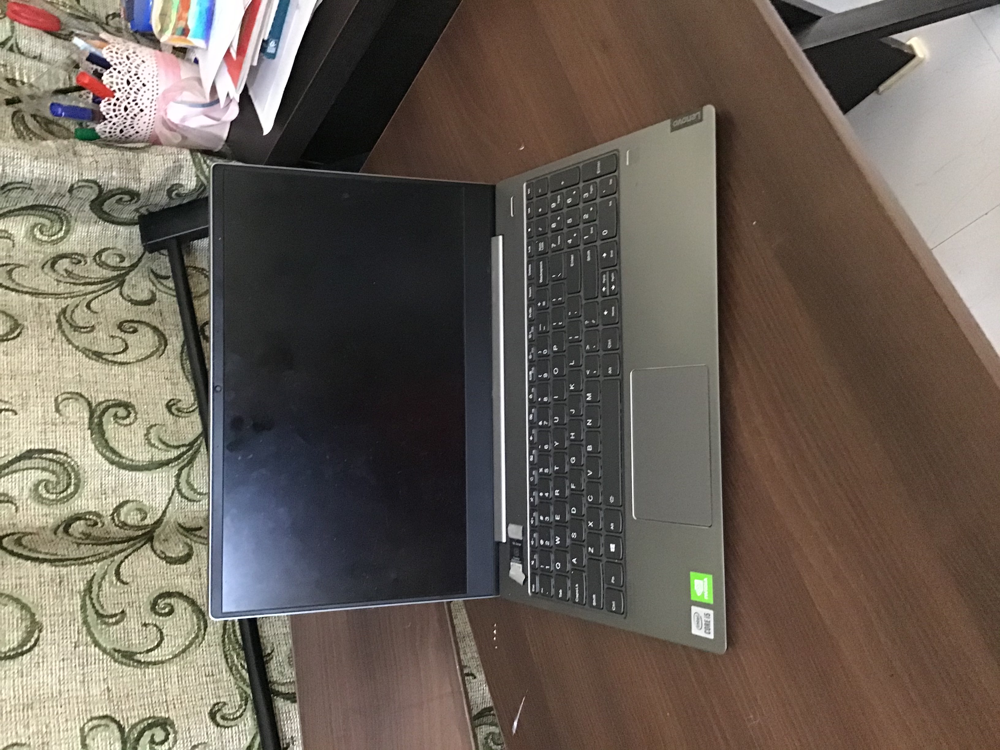
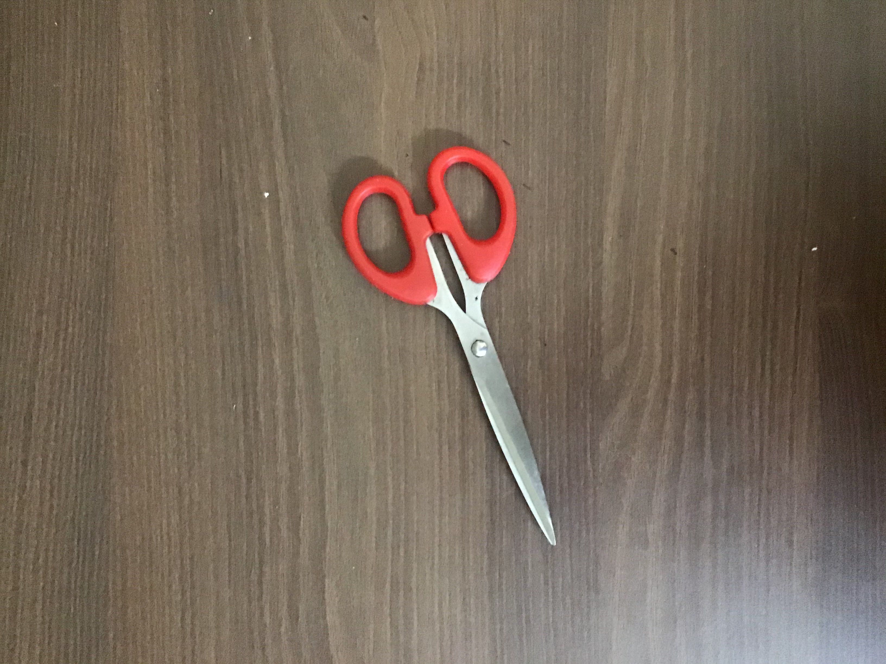
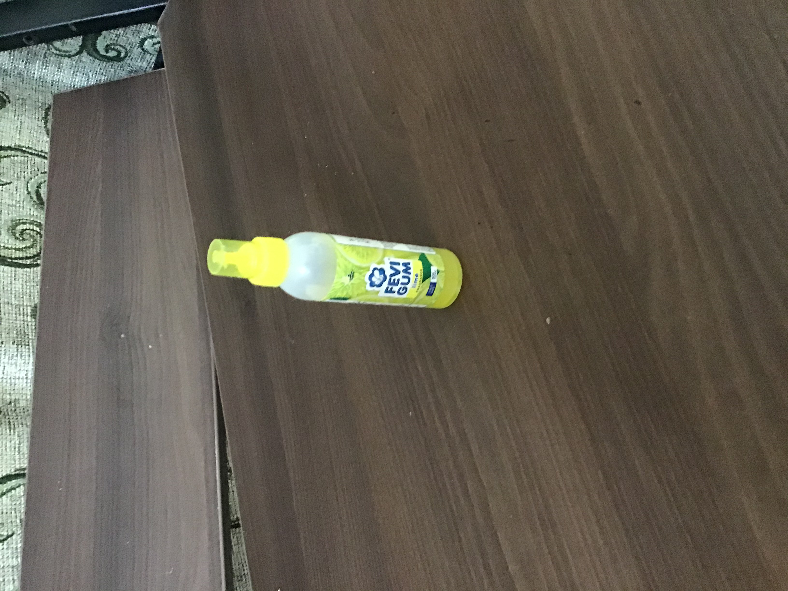
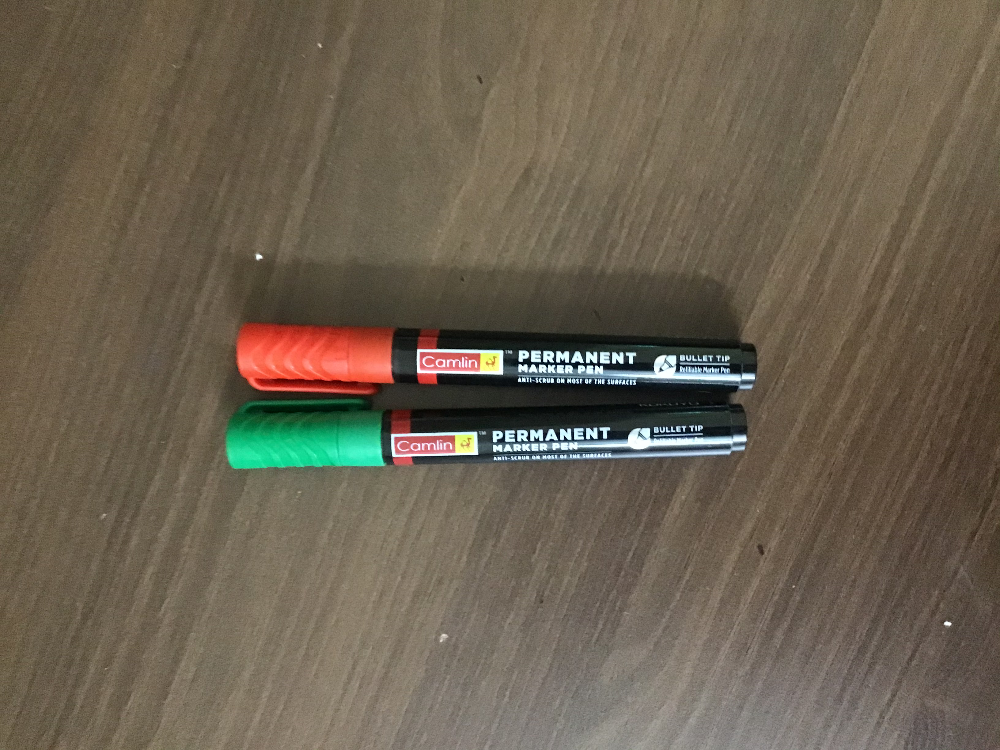

-
Test Image - 
Output on Microsoft Azure - "suitcase"
Output on MobileNet Model - "File"
Results -
MobileNet Mode is more accurate.
-
Test Image - 
Output on Microsoft Azure - "laptop"
Output on MobileNet Model - "laptop"
Results -
Both are correct
-
Test Image - 
Output on Microsoft Azure - "Scissors"
Output on MobileNet Model - "letter opener"
Results -
Microsoft Azure is more accurate.
-
Test Image - 
Output on Microsoft Azure - "Bottle"
Output on MobileNet Model - "lighter"
Results -
Microsoft Azure is more accurate.
-
Test Image - 
Output on Microsoft Azure - "floor"
Output on MobileNet Model - "lipstick"
Results -
MobileNet Model is more accurate.